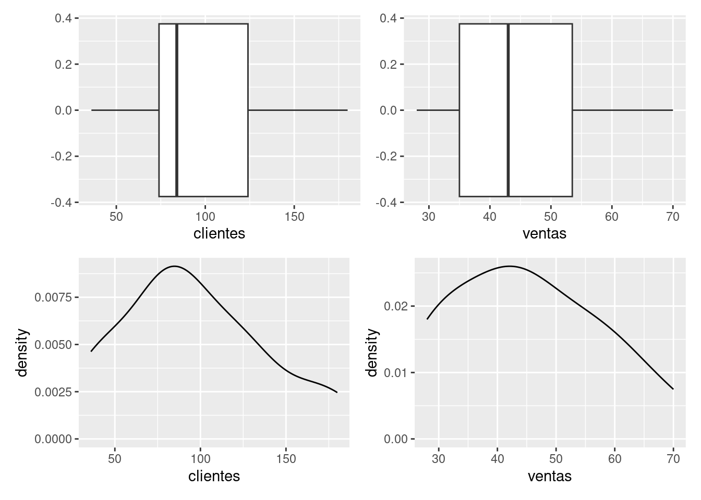
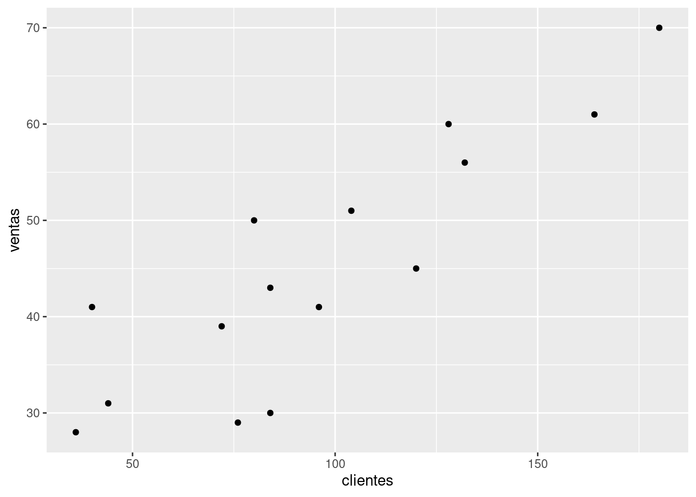
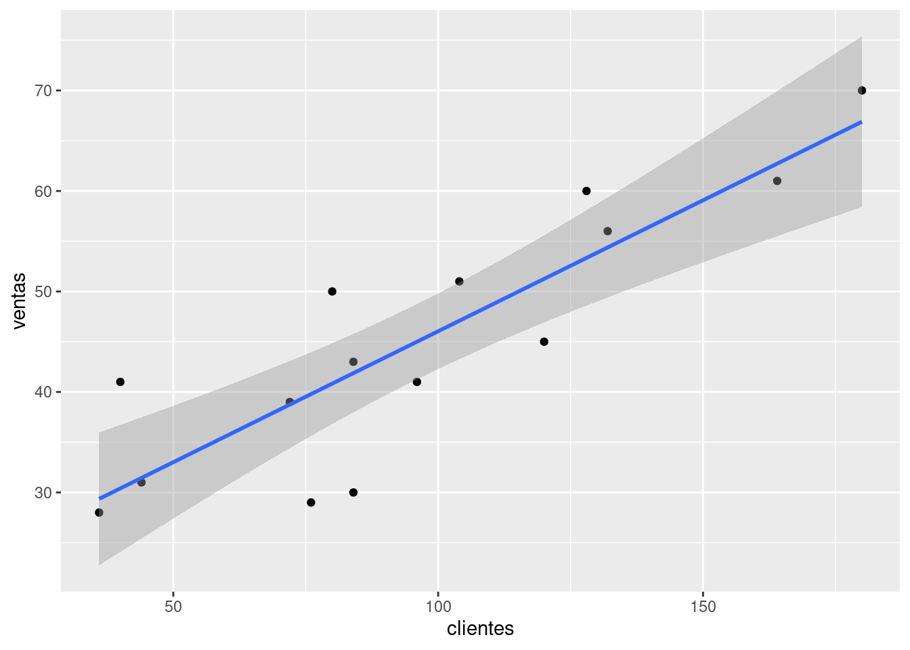

Con el propósito de revisar los códigos en R relacionados con los
procesos descritos en la unidad se tomará información de las dos
primeras variables contenidas en la base ventas contenida
en el paqueteMOD
library(paqueteMOD)
library(tidyverse)
data(ventas) summarytools::descr(ventas[,2:3])Descriptive Statistics
clientes ventas
----------------- ---------- --------
Mean 96.00 45.00
Std.Dev 42.76 12.89
Min 36.00 28.00
Q1 72.00 31.00
Median 84.00 43.00
Q3 128.00 56.00
Max 180.00 70.00
MAD 53.37 17.79
IQR 50.00 18.50
CV 0.45 0.29
Skewness 0.37 0.29
SE.Skewness 0.58 0.58
Kurtosis -0.91 -1.16
N.Valid 15.00 15.00
Pct.Valid 100.00 100.00library(patchwork)
p1 = ggplot(ventas, aes(x=clientes))+geom_boxplot()
p2 = ggplot(ventas, aes(x=ventas))+ geom_boxplot()
p3 = ggplot(ventas, aes(x=clientes))+geom_density()
p4 = ggplot(ventas, aes(x=ventas))+ geom_density()
(p1 + p2)/(p3 + p4)
En este diagrama se pretende visualizar la relación existente entre las variables, si se puede ajustar a una linea recta o si por el contrario se debe realizar una transformación.
Se pueden utilizar las funciones:
plot(x,y)gplot(data, aes(x,y))+ geom_point()library(ggplot2)
ggplot(ventas, aes(x=clientes, y=ventas))+
geom_point()
shapiro.test(ventas$clientes)
Shapiro-Wilk normality test
data: ventas$clientes
W = 0.95329, p-value = 0.5777shapiro.test(ventas$ventas)
Shapiro-Wilk normality test
data: ventas$ventas
W = 0.94876, p-value = 0.5052cor.test(ventas$ventas, ventas$clientes)
Pearson's product-moment correlation
data: ventas$ventas and ventas$clientes
t = 6.2051, df = 13, p-value = 3.193e-05
alternative hypothesis: true correlation is not equal to 0
95 percent confidence interval:
0.6325270 0.9542427
sample estimates:
cor
0.8646318 Para la estimación del modelo requerimos las funciones:
modelo <- lm(formula, data, weights) : estima el
modelo MCOsummary(modelo) : visualiza el objetomodelo1=lm(ventas ~ clientes, ventas)
summary(modelo1)
Call:
lm(formula = ventas ~ clientes, data = ventas)
Residuals:
Min 1Q Median 3Q Max
-11.873 -2.861 0.255 3.511 10.595
Coefficients:
Estimate Std. Error t value Pr(>|t|)
(Intercept) 19.9800 4.3897 4.552 0.000544 ***
clientes 0.2606 0.0420 6.205 3.19e-05 ***
---
Signif. codes: 0 '***' 0.001 '**' 0.01 '*' 0.05 '.' 0.1 ' ' 1
Residual standard error: 6.72 on 13 degrees of freedom
Multiple R-squared: 0.7476, Adjusted R-squared: 0.7282
F-statistic: 38.5 on 1 and 13 DF, p-value: 3.193e-05Call: lm(formula = ventas ~ clientes, data = ventas)
Residuals:
Min 1Q Median 3Q Max
-11.873 -2.861 0.255 3.511 10.595
Coefficients:
Estimate Std. Error t value Pr(>|t|)
(Intercept) 19.9800 4.3897 4.552 0.000544 ***
clientes 0.2606 0.0420 6.205 3.19e-05 ***
---
Signif. codes: 0 ‘***’ 0.001 ‘**’ 0.01 ‘*’ 0.05 ‘.’ 0.1 ‘ ’ 1
Residual standard error: 6.72 on 13 degrees of freedom Multiple R-squared: 0.7476, Adjusted R-squared: 0.7282 F-statistic: 38.5 on 1 and 13 DF, p-value: 3.193e-05
e= modelo1$residuals
shapiro.test(e)
Shapiro-Wilk normality test
data: e
W = 0.96985, p-value = 0.8559library(lmtest)
dwtest(modelo1)
Durbin-Watson test
data: modelo1
DW = 1.6497, p-value = 0.2226
alternative hypothesis: true autocorrelation is greater than 0# Test de Homoscedasticidad
# Ho: la varianza de los erroes es constante
# Ho: V(u) = sigma2
gqtest(modelo1)
Goldfeld-Quandt test
data: modelo1
GQ = 0.76554, df1 = 6, df2 = 5, p-value = 0.6276
alternative hypothesis: variance increases from segment 1 to 2ggplot(ventas, aes(clientes, ventas)) +
geom_point() +
geom_smooth(method = "lm", level = 0.95, formula = y ~ x)